Redesign the Reporting Function for a Vendor Management Software in the Legal Industry
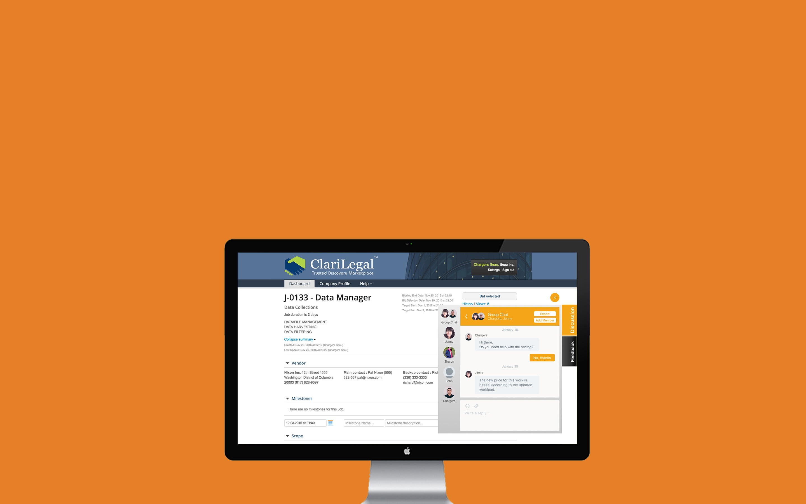UX Redesign
User Research
UX Designer
UX Researcher
Fei Ren, Lola Jiang
Bicheng Xu, Courtney Luk
Clarilegal is a platform that connects and facilitates business between law firms and vendors. For example if a law firm needs data collection on multiple devices for a case they’re working on, the contact several vendors in order to determine what specialists they want to hire to get the job done.
Three Main Benefits of ClariLegal
Due to the complicated nature of the legal industry, it is crucial that ClariLegal offers straightforward communication tools if it is to be successful in facilitating such detailed and intensive information. However, ClariLegal lacks flexible and cohesive reporting tools for both vendor and clients.
We did 5 interviews of our clients and users of Clarilegal, and they provided us some very useful feedback.
We interpreted the interviews and made some key findings (see below) after building the affinity diagram.
We did heuristic evaluations for the existing platform.
Based on the 4 key findings, we did UX Redesign for ClariLegal.
Before
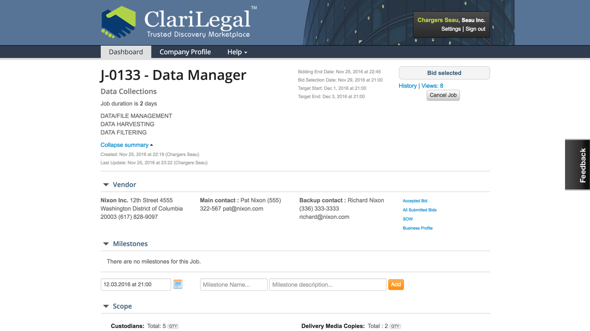The existing discussion panel is too bulky to use and lacks real-time communication.
After
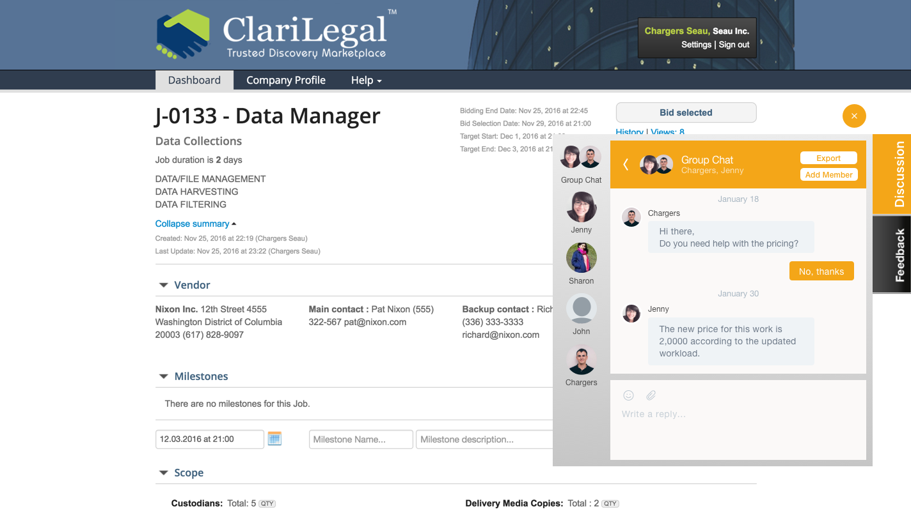We designed a chat-box which enables real-time communication. Users can set private chat or group chat.
Report
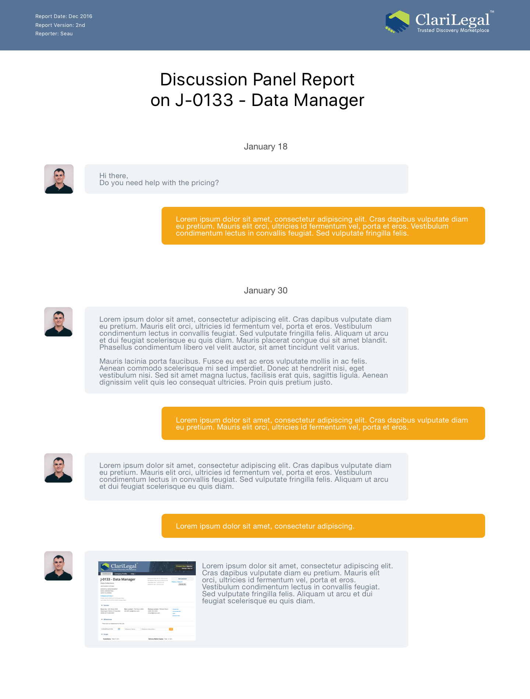Through the chatbox users can generate a full report of the chat history to a third part for references.
Before
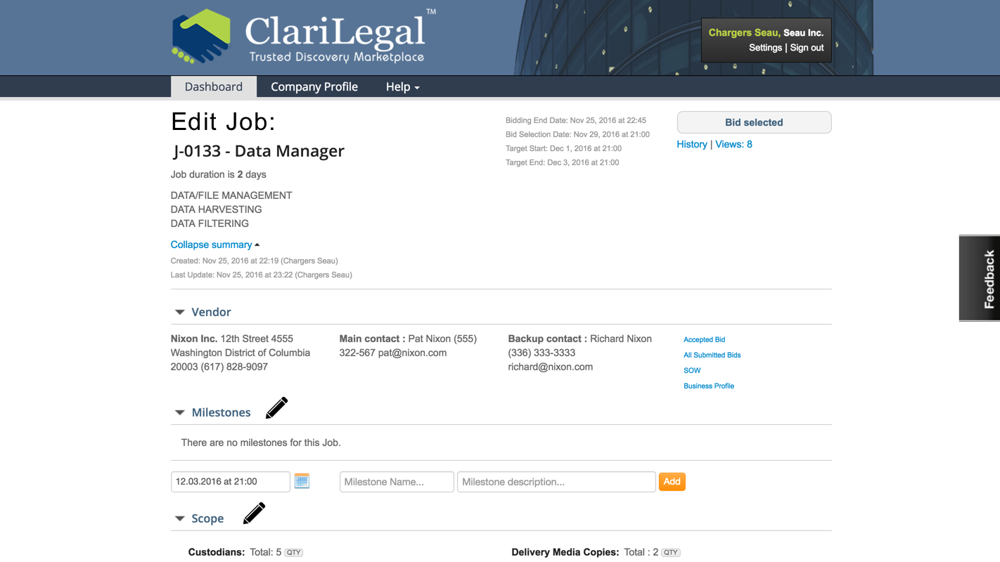The existing statement of work is not editable once it is signed. However, it is very common that it could be revised often.
After
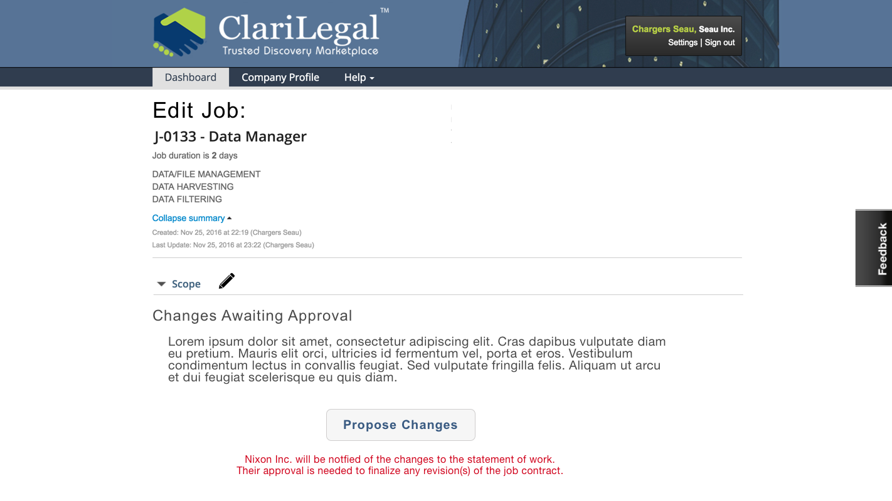We redesigned the platform and added a revise button, which users can propose changes to the other party.
Report
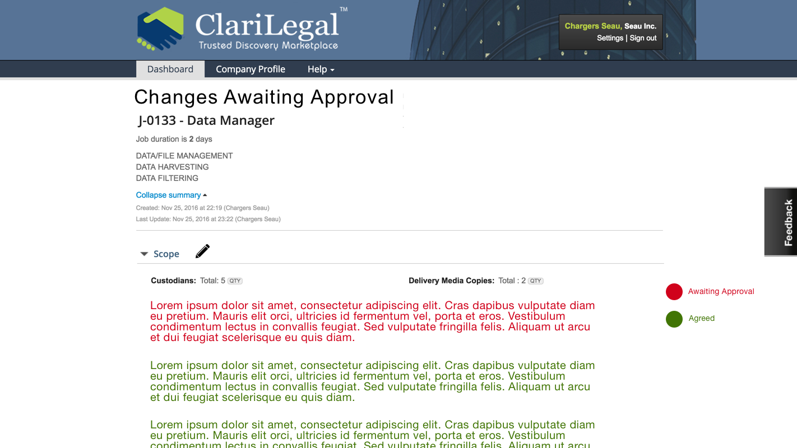The red ones show pending approvals and green ones are approved changes.
Before
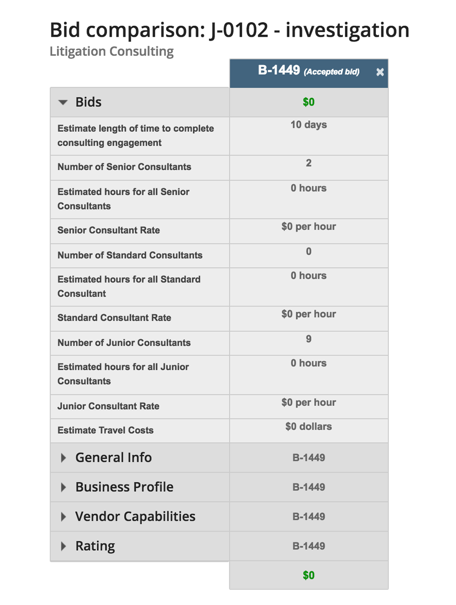The cells in the existing comparison form are too narrow to hold passages. It is also very burdensome to click on each headlines and wait for the charts to drop down.
After
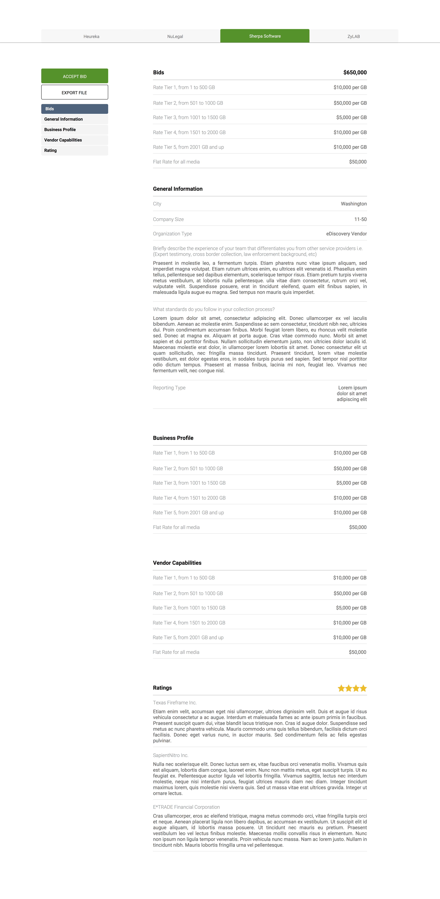In the new design, all parts are enlarged by default, and users can also click the navigation to get a certain part quickly.
Report
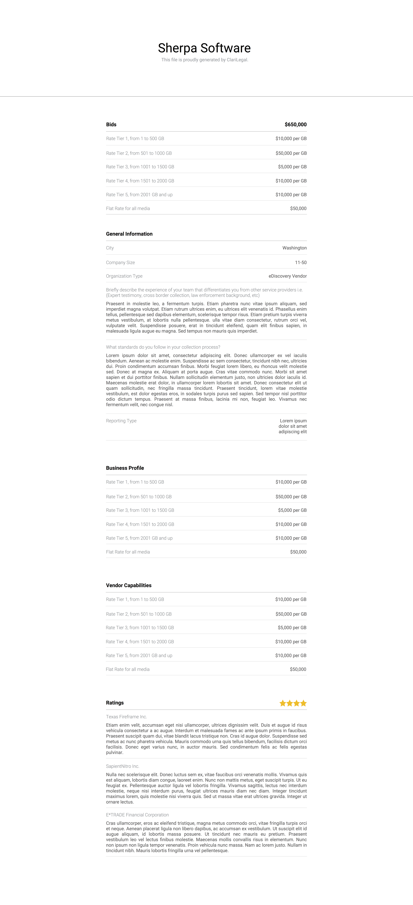The export function is easy to use and informative.
Before
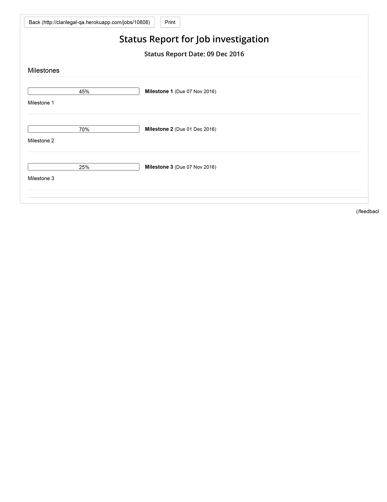The existing export function is limited and the visualization is not well-designed
After
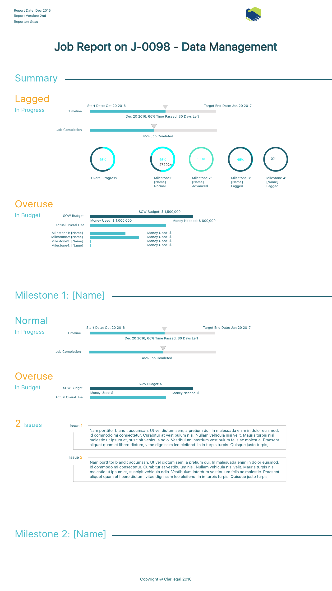We used a new visualization strategy in the new design and different colors indicate different status.